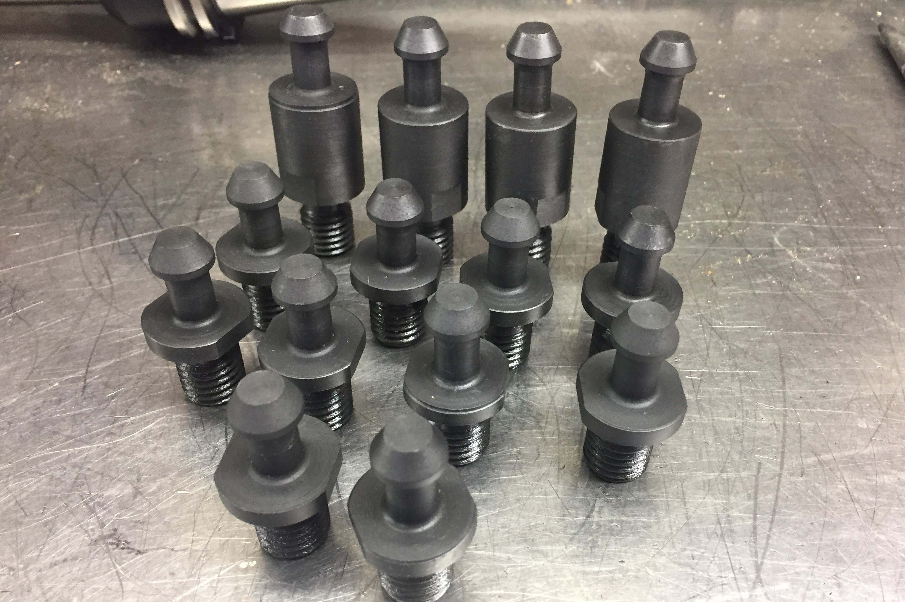

Hermle Pull Studs
Making pull studs for using our CAT-40 and NMTB-40 tool holders in our Hermle UWF 1000 CNC Mill

Our CNC mill is a Hermle UWF 1000, with an NMTB-40 spindle. The NMTB-40 spindle is very similar to the more common CAT-40 used today, except the NMTB-40 is not designed for use with tool changers, and has a 1 inch extension on the back before the pull stud. Because they are otherwise the same, all that is needed to use a CAT-40 tool in an NMTB-40 spindle is to get pull studs with the 1 inch extension. However, all of the Hermle pull studs are extremely expensive, so I decided to make my own.
The steps I used to make a pull stud.
Because I did not have a CNC mill at the time, I made the pull studs using the Hermle, putting the stock into the spindle of the mill and clamping tooling to the table of the machine (basically like gang tooling). This was actually extremely effective and worked very well. To prep the stock, I cut a piece of roundstock to length in our reciprocating saw, then turned a portion of the end on the manual lathe, because the stock OD was actually slightly larger than I could clamp in the collet chuck I was using. Then I'd clamp the part in the collet chuck, with a known stick-out, and run the first program, which cut the area for the threaded region. Because the mill does not have a spindle encoder, there was no way to do the threading on the mill, so I then took the part out and cut the thread itself on the manual lathe, and then cut the wrench flats on the manual mill. I made a small mount with a threaded bore that I secured in the mill spindle and then threaded the pull stud into, allowing me to mill the actual knob part of the pull stud. This operation required two turning tools, so I had to write the program to take into account the tool offset manually. Once I was making many parts, the system worked very well, because all the manual operations took slightly less time than the CNC operations, so when the process was full of parts moving through, there was very little downtime and production was very fast.
Creative use of the Hermle CNC mill to act like a lathe. We have since acquired a real CNC lathe.
After the machining was done, I parkerized them to get a nice finish. First the parts were all degreased and cleaned with distilled water, then preheating in an oven to dry them and reduce the temperature difference during the actual parkerizing step. Then they were simply immersed in boiling Parkerizing solution for a few minutes, and then immersed in oil to cool and allow the oil to penetrate the finish.